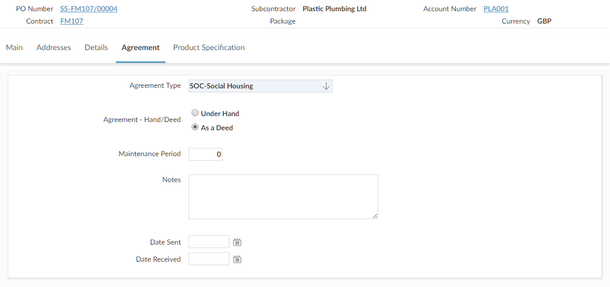
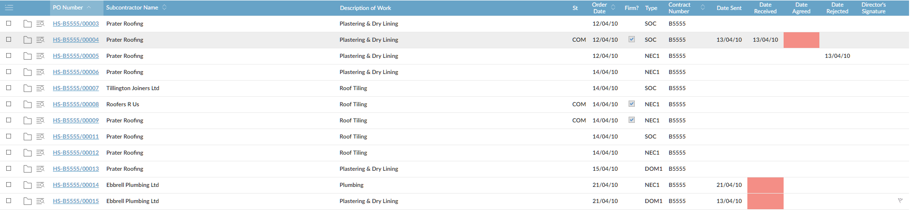
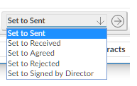
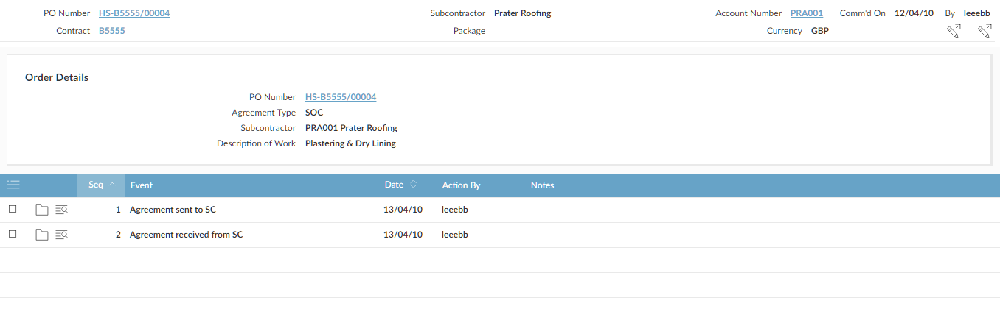

There are two types of event: automatic and manual.
When you enter an order, the Agreement Required

SC Agreements Workbench allows you to track and manage the progress of agreements.

The dates for certain key events are shown on the screen, and choose actions allow you to record these key events for one or more selected agreements:
|
 |
If you reject an agreement,
If an agreement has been sent but is not received back from the subcontractor within a specified number of days, the Date Received column shows amber. If it is still not received after a further specified period, the column shows red.
If an agreement has been received from the subcontractor but not agreed within a specified number of days, the Date Agreed column shows amber. If it is still not agreed after a further specified period, the column shows red.
You can filter on when reminder letters are due, and if an appropriate Mail Merge has been set up, you can send reminder letters to subcontractors and record the dates using an automatic action.
All the events and their dates are shown on the Agreement Events screen (click the link on the Agreements browse to show the Agreement Events screen for an agreement). You can also use this to add events manually, to record other stages in the process.
